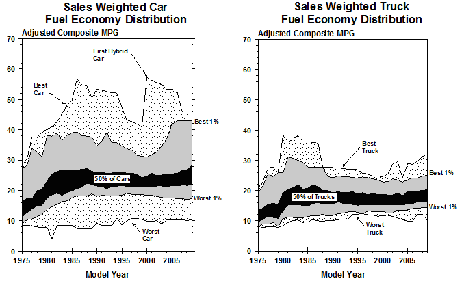
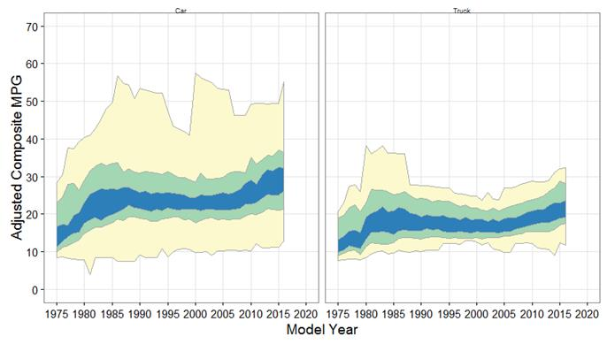
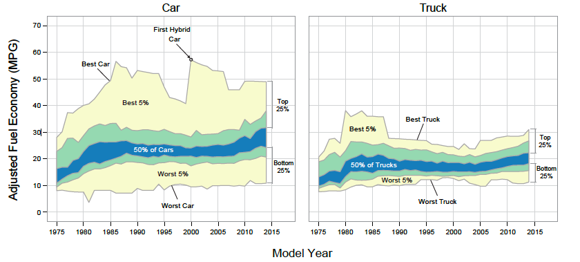
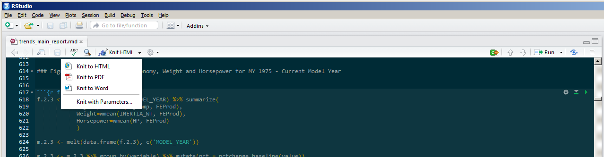
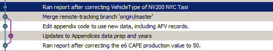
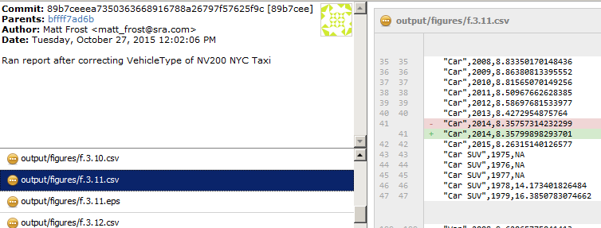

The Trends Report
A Case Study in Automated Analysis
Matt Frost, CSRA • Aaron Hula, EPA OTAQ
About the Trends Report
"Light-Duty Automotive Technology, Carbon Dioxide Emissions, and Fuel Economy Trends: 1975–2015."
Pre-R Workflow
Circa 2008
Text files → Access → FORTRAN* script → Text files → Access → Excel or other graphing tool
* Yes, really!
Two Tracks: Data Preparation and Report Production
Cleaning the data and producing the report are interrelated.
Data Preparation
The incoming data requires extensive processing, not all of which can be automated.
Each distinct vehicle record might have several rows in the source data:
- Fuel type
- Test group
- Motor KW rating
Initial R Workflow
Circa 2009
Access → R → Text files → Excel or Adobe Illustrator
Figure Production
Old production method, final version:

Figure Production
New production method, draft straight from R:

Figure Production Source Code
ggplot(mpg.percentile , aes(x=MODEL_YEAR)) +
facet_wrap(~ CarOrTruck , ncol=2 ) +
geom_ribbon(aes(ymin=worst, ymax=best), fill="#FCF9CE", color="darkgray") +
geom_ribbon(aes(ymin=pct05, ymax=pct95), fill="#A3D6B3", color="darkgray") +
geom_ribbon(aes(ymin=pct25, ymax=pct75), fill="#2C7FB9", color="darkgray") +
scale_y_continuous(name='Adjusted Composite MPG', limits=c(0, 70),breaks=seq(0,80,10)) +
scale_x_continuous(name='Model Year', limits=c(1975, 2020),breaks=seq(1975,2020,5))
Figure Production
Final version, edited in Illustrator:

RMarkdown & knitr

Version Control


Operational Constraints: CBI
The CAFE and label databases contain confidential business information (CBI), which must be stored and handled securely.
- The database is stored on an encrypted network share.
- All communication with the database happens via VPN.
- No raw database records are written to any local drives or to the version control system.
Other Potential Applications
- Business intelligence "dashboards"
- Daily, weekly, or monthly reporting
- Interactive reporting via Shiny